Sac şekillendirme ve kesme makineleri 7 kalem · 7 parti
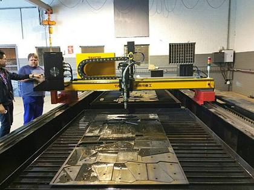
Temsili fotoğrafCNC plazma / oksigaz kesim makinesi
CNC-Plasmaschneid- und Autogen-Brennschneidmaschine, ZINSER
Tahmini ağırlık ≈ 2.0–4.0 t
1 partiRef #78
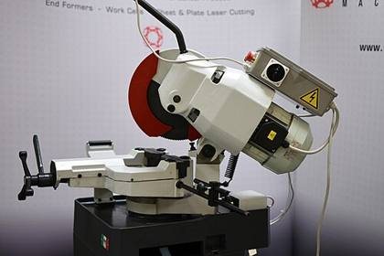
Temsili fotoğrafDaire testere (soğuk kesim)
Kaltkreissäge, Tiger
Tahmini ağırlık ≈ 0.1–0.2 t
1 partiRef #85
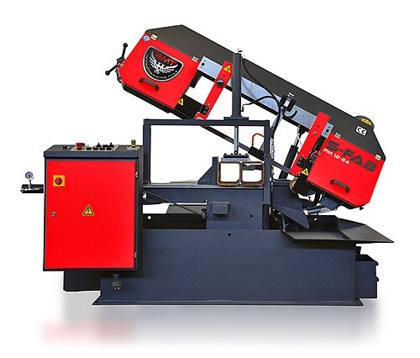
Temsili fotoğrafAçılı şerit testere
Elektro-hydraulische Vertikal-Gehrungsbandsäge, Bauer
Tahmini ağırlık ≈ 1.2–1.8 t
1 partiRef #107
Açılı şerit testere
Horizontal-Gehrungsbandsäge Halbautomat, PEHAKA
Tahmini ağırlık ≈ 0.8–1.2 t
1 partiRef #108
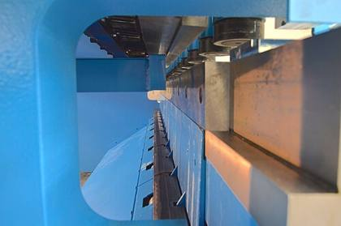
Temsili fotoğrafAbkant/büküm makinesi
Manuelle Schwenkbiegemaschine, DURMAZLAR
Tahmini ağırlık ≈ 0.4–0.7 t
1 partiRef #120
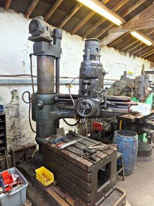
Temsili fotoğrafRadyal matkap
Radialbohrmaschine, МОДЕЛЬ
Tahmini ağırlık ≈ 4.7 t
1 partiRef #138
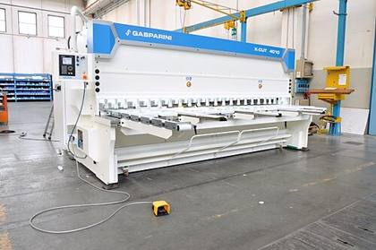
Temsili fotoğrafHidrolik giyotin makas
Hydraulische Tafelschere / Blechschere, HACO
Tahmini ağırlık ≈ 5.0 t
1 partiRef #140
Kaynak makineleri 11 kalem · 11 parti
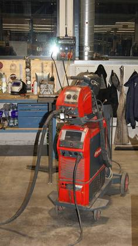
Temsili fotoğrafMIG/MAG kaynak makinesi
Mikroprozessor-gesteuertes MIG/MAG -u. Elektrodenschweißen, FRONIUS
Tahmini ağırlık ≈ 0.1–0.2 t
1 partiRef #71
MIG/MAG kaynak makinesi
Mikroprozessor-gesteuertes MIG/MAG -u. Elektrodenschweißen FRONIUS
Tahmini ağırlık ≈ 0.1–0.2 t
1 partiRef #75
MIG/MAG kaynak makinesi
Schweißgerät, Fronius
Tahmini ağırlık ≈ 0.1–0.2 t
1 partiRef #102
MIG/MAG kaynak makinesi
Schweißgerät, Fronius
Tahmini ağırlık ≈ 0.1–0.2 t
1 partiRef #103
MIG/MAG kaynak makinesi
MIG/MAG Schweißgerät, Fronius
Tahmini ağırlık ≈ 0.1–0.2 t
1 partiRef #121
MIG/MAG kaynak makinesi
MIG/MAG Schweißgerät, Fronius
Tahmini ağırlık ≈ 0.1–0.2 t
1 partiRef #122
MIG/MAG kaynak makinesi
MIG/MAG Schweißgerät, MERKLE
Tahmini ağırlık ≈ 0.1–0.2 t
1 partiRef #128
MIG/MAG kaynak makinesi
MIG/MAG Schweißgerät, MERKLE
Tahmini ağırlık ≈ 0.1–0.2 t
1 partiRef #129
MIG/MAG kaynak makinesi
MIG/MAG Schweißgerät, MERKLE
Tahmini ağırlık ≈ 0.1–0.2 t
1 partiRef #130
MIG/MAG kaynak makinesi
MIG/MAG Schweißgerät, MERKLE
Tahmini ağırlık ≈ 0.1–0.2 t
1 partiRef #131
MIG/MAG kaynak makinesi
MIG/MAG Schweißgerät, MERKLE
Tahmini ağırlık ≈ 0.1–0.2 t
1 partiRef #133
Elektrikli el aletleri ve manyetik matkaplar 16 kalem · 16 parti
 Temsili fotoğraf
Temsili fotoğrafManyetik matkap
Magnet-Kernbohrmaschine, BDS
Tahmini ağırlık ≈ 0.0 t
1 partiRef #10
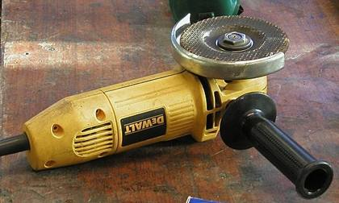
Temsili fotoğrafElektrikli el aletleri
Handbohrmaschine
Tahmini ağırlık ≈ 0.0 t
1 partiRef #12
Elektrikli el aletleri
Handbohrmaschine, Eibenstock
Tahmini ağırlık ≈ 0.0 t
1 partiRef #14
Elektrikli el aletleri
Bandschleifer, BLACK DECKER
Tahmini ağırlık ≈ 0.0 t
1 partiRef #17
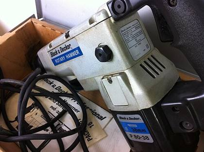
Temsili fotoğrafDarbeli matkap / kırıcı çekiç
Druckluft Meisselhammer Set, BODCRAFT
Tahmini ağırlık ≈ 0.0 t
1 partiRef #20
Elektrikli el aletleri
Lötpistole, Meisterkraft
Tahmini ağırlık ≈ 0.0 t
1 partiRef #21
Elektrikli el aletleri
Posten Handbohrmaschine, Zweihandflex
Tahmini ağırlık ≈ 0.0 t
1 partiRef #22
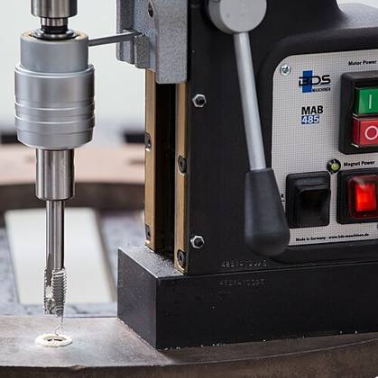
Temsili fotoğrafKılavuz çekme makinesi
Gewindescheidmaschine, FEIN
Tahmini ağırlık ≈ 0.0–0.1 t
1 partiRef #23
Elektrikli el aletleri
Handbohrmaschine, BOSCH
Tahmini ağırlık ≈ 0.0 t
1 partiRef #25
Darbeli matkap / kırıcı çekiç
Kombihammer, MAKITA
Tahmini ağırlık ≈ 0.0 t
1 partiRef #30
Elektrikli el aletleri
Posten Flex-Geräte
Tahmini ağırlık ≈ 0.0 t
1 partiRef #31
Temsili fotoğrafManyetik matkap
Magnet-Kernbohrmaschine, BDS
Tahmini ağırlık ≈ 0.0 t
1 partiRef #32
Temsili fotoğrafManyetik matkap
Magnet-Kernbohrmaschine, BDS
Tahmini ağırlık ≈ 0.0 t
1 partiRef #33
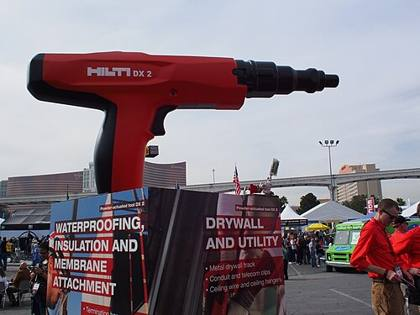
Temsili fotoğrafBarutla çalışan sabitleme tabancası
Halbautomatisches Bolzensetzgerät, HILTI
Tahmini ağırlık ≈ 0.0 t
1 partiRef #35
Temsili fotoğrafManyetik matkap
Magnetbohrmaschine, VEVOR
Tahmini ağırlık ≈ 0.0 t
1 partiRef #60
Temsili fotoğrafManyetik matkap
Magnetbohrmaschine, MABasic
Tahmini ağırlık ≈ 0.0 t
1 partiRef #94
El, ölçüm ve kaldırma aletleri 6 kalem · 6 parti
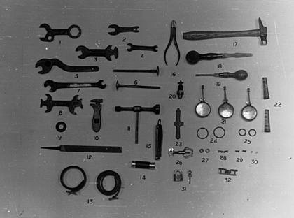
Temsili fotoğrafEl aletleri ve kaldırma donanımı
Posten Kleinwerkzeug
Tahmini ağırlık ≈ 0.0–0.1 t
1 partiRef #37
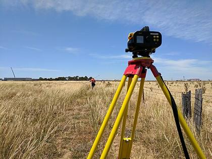
Temsili fotoğrafÖlçüm ve tork aletleri
Posten Stative für Rotationslaser
Tahmini ağırlık ≈ 0.0 t
1 partiRef #42
El aletleri ve kaldırma donanımı
Werkzeugkiste, YATO
Tahmini ağırlık ≈ 0.0–0.1 t
1 partiRef #43
Ölçüm ve tork aletleri
Vermessungsgerät, Nedo
Tahmini ağırlık ≈ 0.0 t
1 partiRef #46
Ölçüm ve tork aletleri
Drehmomentvervielfältiger, Stahlwille
Tahmini ağırlık ≈ 0.0 t
1 partiRef #50
El aletleri ve kaldırma donanımı
Posten Gehänge
Tahmini ağırlık ≈ 0.0–0.1 t
1 partiRef #62
Atölye mobilyaları ve depolama 19 kalem · 19 parti
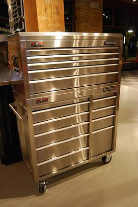
Temsili fotoğrafÇelik dolap (içindekileriyle birlikte)
Stahlblechschrank mit Inhalt
Tahmini ağırlık ≈ 0.1–0.2 t
1 partiRef #57
Çelik dolap (içindekileriyle birlikte)
Stahlblechschrank mit Inhalt
Tahmini ağırlık ≈ 0.1–0.2 t
1 partiRef #66
Çelik dolap (içindekileriyle birlikte)
Stahlblechschrank mit Inhalt
Tahmini ağırlık ≈ 0.1–0.2 t
1 partiRef #68
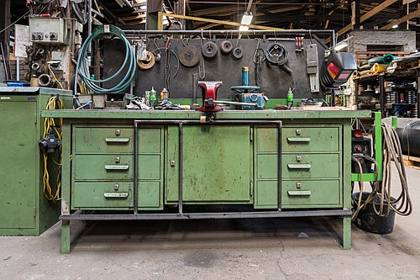
Temsili fotoğrafÇalışma tezgâhı
Werkbank
Tahmini ağırlık ≈ 0.1 t
1 partiRef #72
Çelik dolap (içindekileriyle birlikte)
Stahlblechschrank mit Inhalt
Tahmini ağırlık ≈ 0.1–0.2 t
1 partiRef #73
Çelik dolap (içindekileriyle birlikte)
Stahlblechschrank
Tahmini ağırlık ≈ 0.1–0.2 t
1 partiRef #88
Çelik dolap (içindekileriyle birlikte)
Stahlblechschrank mit Inhalt
Tahmini ağırlık ≈ 0.1–0.2 t
1 partiRef #89
Çelik dolap (içindekileriyle birlikte)
Stahlblechschrank mit Inhalt
Tahmini ağırlık ≈ 0.1–0.2 t
1 partiRef #90
Çelik dolap (içindekileriyle birlikte)
Stahlblechschrank mit Inhalt
Tahmini ağırlık ≈ 0.1–0.2 t
1 partiRef #91
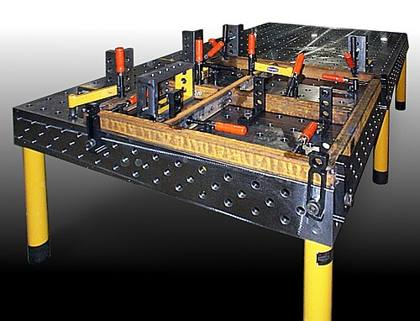
Temsili fotoğrafKaynak / tesviye masası
Schweißtisch Eigenbau
Tahmini ağırlık ≈ 0.1–0.4 t
1 partiRef #96
Kaynak / tesviye masası
Schweißtisch Eigenbau
Tahmini ağırlık ≈ 0.1–0.4 t
1 partiRef #97
Kaynak / tesviye masası
Schweißtisch Eigenbau
Tahmini ağırlık ≈ 0.1–0.4 t
1 partiRef #99
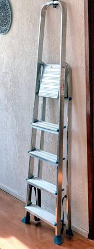
Temsili fotoğrafAlüminyum merdivenler
Posten Alu-Leitern
Tahmini ağırlık ≈ 0.0–0.1 t
1 partiRef #100
Çelik dolap (içindekileriyle birlikte)
Stahlblechschrank mit Inhalt
Tahmini ağırlık ≈ 0.1–0.2 t
1 partiRef #112
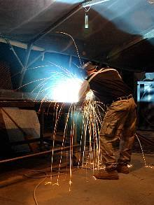
Temsili fotoğrafKaynak perdeleri
Posten Schweißvorhänge
Tahmini ağırlık ≈ 0.0–0.1 t
1 partiRef #114
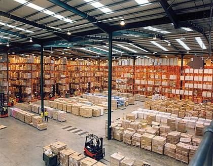
Temsili fotoğrafAğır yük rafları (içindekileriyle birlikte)
Schwerlastregal mit Inhalt
Tahmini ağırlık ≈ 0.1–0.3 t
1 partiRef #115
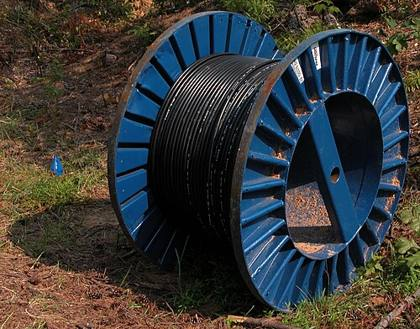
Temsili fotoğrafElektrik kabloları
Posten Elektrokabel
Tahmini ağırlık ≈ 0.1–0.2 t
1 partiRef #116
Kaynak / tesviye masası
Schlosserarbeitstisch, ca 300x120cm
Tahmini ağırlık ≈ 0.1–0.4 t
1 partiRef #123
Çelik dolap (içindekileriyle birlikte)
Stahlblechschrank mit Inhalt
Tahmini ağırlık ≈ 0.1–0.2 t
1 partiRef #125
Ofis ve personel odası 7 kalem · 7 parti
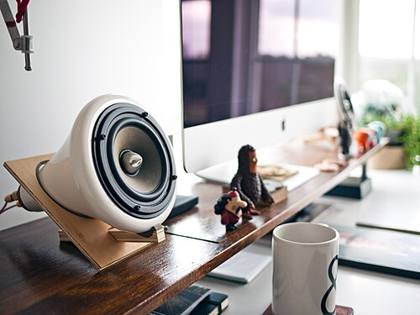
Temsili fotoğrafOfis ve personel odası ekipmanları
Posten Büroausstattung
Tahmini ağırlık ≈ 0.1–0.2 t
1 partiRef #2
Ofis ve personel odası ekipmanları
Posten Büroausstattung
Tahmini ağırlık ≈ 0.1–0.2 t
1 partiRef #4
Ofis ve personel odası ekipmanları
Posten Büroausstattung
Tahmini ağırlık ≈ 0.1–0.2 t
1 partiRef #5
Ofis ve personel odası ekipmanları
Posten Holzregale
Tahmini ağırlık ≈ 0.1–0.2 t
1 partiRef #6
Ofis ve personel odası ekipmanları
Multifunktionsgerät, Samsung
Tahmini ağırlık ≈ 0.1–0.2 t
1 partiRef #7
Ofis ve personel odası ekipmanları
Miniküche
Tahmini ağırlık ≈ 0.1–0.2 t
1 partiRef #8
Ofis ve personel odası ekipmanları
Rauminhalt Sozialraum
Tahmini ağırlık ≈ 0.1–0.2 t
1 partiRef #52
Diğer kalemler 1 kalem · 1 parti
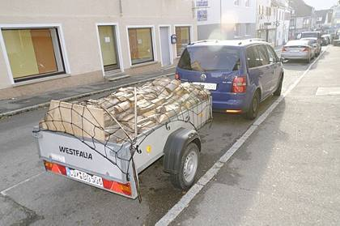
Temsili fotoğrafRömork
Anhänger offener Kasten
Tahmini ağırlık ≈ 0.4 t
1 partiRef #148
İçerik özeti
Ürün tipine göre
| Ürün tipi | Kalem | Miktar (parti) | Pay | Tahmini ağırlık |
|---|---|---|---|---|
| MIG/MAG kaynak makinesi | 11 | 11 | 16.4% | ≈ 1.3–2.2 t |
| Çelik dolap (içindekileriyle birlikte) | 10 | 10 | 14.9% | ≈ 0.8–2.0 t |
| Ofis ve personel odası ekipmanları | 7 | 7 | 10.4% | ≈ 0.4–1.8 t |
| Elektrikli el aletleri | 7 | 7 | 10.4% | ≈ 0.0–0.2 t |
| Manyetik matkap | 5 | 5 | 7.5% | ≈ 0.1 t |
| Kaynak / tesviye masası | 4 | 4 | 6.0% | ≈ 0.6–1.6 t |
| El aletleri ve kaldırma donanımı | 3 | 3 | 4.5% | ≈ 0.1–0.3 t |
| Ölçüm ve tork aletleri | 3 | 3 | 4.5% | ≈ 0.0–0.1 t |
| Darbeli matkap / kırıcı çekiç | 2 | 2 | 3.0% | ≈ 0.0 t |
| Açılı şerit testere | 2 | 2 | 3.0% | ≈ 2.0–3.0 t |
| Kılavuz çekme makinesi | 1 | 1 | 1.5% | ≈ 0.0–0.1 t |
| Barutla çalışan sabitleme tabancası | 1 | 1 | 1.5% | ≈ 0.0 t |
| Çalışma tezgâhı | 1 | 1 | 1.5% | ≈ 0.1 t |
| CNC plazma / oksigaz kesim makinesi | 1 | 1 | 1.5% | ≈ 2.0–4.0 t |
| Daire testere (soğuk kesim) | 1 | 1 | 1.5% | ≈ 0.1–0.2 t |
| Alüminyum merdivenler | 1 | 1 | 1.5% | ≈ 0.0–0.1 t |
| Kaynak perdeleri | 1 | 1 | 1.5% | ≈ 0.0–0.1 t |
| Ağır yük rafları (içindekileriyle birlikte) | 1 | 1 | 1.5% | ≈ 0.1–0.3 t |
| Elektrik kabloları | 1 | 1 | 1.5% | ≈ 0.1–0.2 t |
| Abkant/büküm makinesi | 1 | 1 | 1.5% | ≈ 0.4–0.7 t |
| Radyal matkap | 1 | 1 | 1.5% | ≈ 4.7 t |
| Hidrolik giyotin makas | 1 | 1 | 1.5% | ≈ 5.0 t |
| Römork | 1 | 1 | 1.5% | ≈ 0.4 t |
| Toplam | 67 | 67 | 100% | ≈ 18–27 t |
Gruba göre
| Grup | Kalem | Miktar (parti) | Pay | Tahmini ağırlık |
|---|---|---|---|---|
| Sac şekillendirme ve kesme makineleri | 7 | 7 | 10.4% | ≈ 14–18 t |
| Kaynak makineleri | 11 | 11 | 16.4% | ≈ 1.3–2.2 t |
| Elektrikli el aletleri ve manyetik matkaplar | 16 | 16 | 23.9% | ≈ 0.1–0.5 t |
| El, ölçüm ve kaldırma aletleri | 6 | 6 | 9.0% | ≈ 0.1–0.4 t |
| Atölye mobilyaları ve depolama | 19 | 19 | 28.4% | ≈ 1.7–4.4 t |
| Ofis ve personel odası | 7 | 7 | 10.4% | ≈ 0.4–1.8 t |
| Diğer kalemler | 1 | 1 | 1.5% | ≈ 0.4 t |
| Toplam | 67 | 67 | 100% | ≈ 18–27 t |
Nakliye tahmini
| Toplam hacim (yaklaşık) | ≈ 55–90 m³ |
| Toplam ağırlık (yaklaşık) | ≈ 18–27 t |
| 40′ High Cube konteynerler | 1–2 |
| 20′ Standart konteynerler | 2–4 |
Satır başına ağırlıklar tahminidir (belirtilen yerlerde makine verileri: giyotin makas ≈ 5 t, radyal matkap 4.7 t); toplam = satırların toplamıdır. Ağır makineler vinç/forklift ile yüklemeye ihtiyaç duyar; giyotin makas, radyal matkap ve CNC kesim makinesi açık tavan (open-top) veya flat-rack konteyner gerektirebilir. Kesin rakamlar çeki listesinden sonra netleşecektir.
Kullanılan konteyner kapasitesi: 40′ HC ≈ 68 m³ / 26.5 t, 20′ ≈ 28 m³ / 24 t (pratik yükleme).
Kullanılan konteyner kapasitesi: 40′ HC ≈ 68 m³ / 26.5 t, 20′ ≈ 28 m³ / 24 t (pratik yükleme).